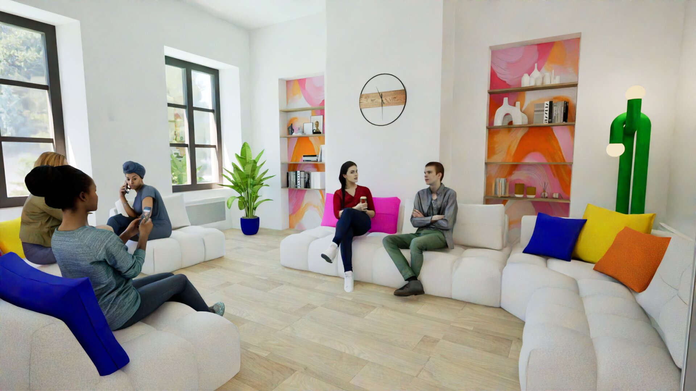
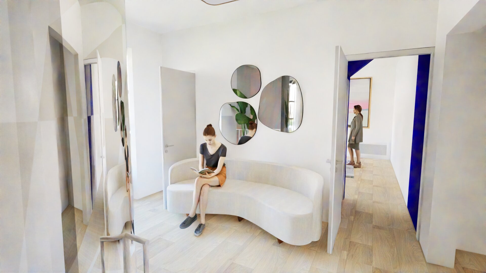

Cet espace, de par sa nature semi-enterrée et sa lumière tamisée, crée une ambiance plus intime. Ce type d'atmosphère convient bien à une salle de jeux, qui ne requiert pas nécessairement la luminosité et la sensation d'ouverture attendues dans des espaces plus calmes ou formels. Aussi, l'ancienne cuisine du réfectoire du centre de loisirs a gardé sa fonction mais cette fois-ci, pour animer des ateliers de cuisine. De plus, afin de respecter l'accessibilité PMR, j'ai intégré un élévateur au niveau de la porte reliant le sous-sol à l'extérieur ; cela évite aux personnes à mobilité réduite de prendre l'ascenseur et de faire un très grand détour.
Pour ce qui concerne l'ambiance générale, la mairie a sélectionné une atmosphère très vive et colorée, permettant de contraster avec le reste du bâtiment. Cela apporte une dimension plus moderne et actuelle du patrimoine ; en effet, celui-ci n'est pas figé et évolue dans le temps.
Lieu de passage intense, il favorise les échanges et la convivialité. Il accueille donc un espace de détente où l'on peut discuter et de se retrouver. pour préserver la tranquilité de la salle d'exposition et de projection, des parois transparentes et coulissantes à isolation phonique ont été installées permettant ainsi de contenir le bruit tout en gardant une ouverture visuelle.
Dans l'entrée principale où se trouve les escaliers, j'ai placé un ascenseur afin de garantir l'accessibilité PMR pour chaque niveau du bâtiment. Celui-ci est de forme circulaire afin d'épouser la forme des escaliers et transparent et chrome, ce qui permet de minimiser son impact visuel.
Cet étage, comportant un certain nombre de pièces fermées, me paraissait idéal à la location. Au nombre de trois, elles sont dédiées à des associations (ou autre) pouvant être intéressées afin d'animer des ateliers et cours. De plus, cela permettrait à la commune d'assurer des rentrées d'argent permettant de s'occuper et d'entretenir le site.
Situé au dernier étage du bâtiment, cet étage bénéficie d'un isolement naturel, idéal pour la concentration. Il accueille des espaces de coworking dans la salle principale, une zone de travail individeul dans une salle isolée, ainsi qu'une salle de pause. Calme et en retrait, il offre un environnement propice à la réflexion et à la productivité.